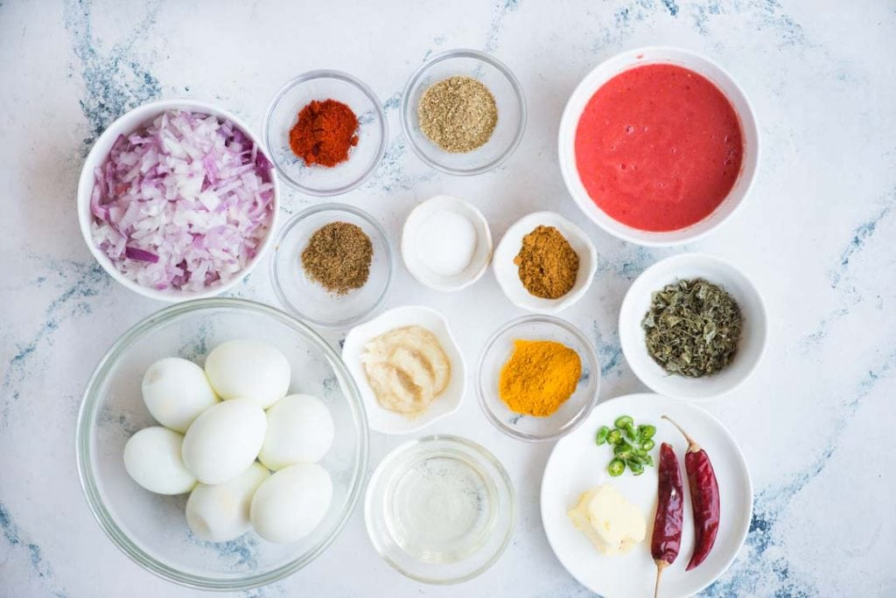

This Egg curry reminds me of the rustic egg curries you get in dhabas. Rich, spicy Onion tomato gravy with oil oozing on the sides and a smokey flavour. It pairs perfectly with naan or paratha.
Trips on Indian highways are incomplete without a stop at Dhabas. You might not get an elaborate menu in those places but you will definitely get hot fresh. Naan, Tandoori roti, dal fry, chana masala, egg curry, chicken curry are few of my favourites, of course with lots of onion, lemon and green chilli.
how to hard boi an egg?
Ingrediants

For Roasting Eggs
1 tablespoon Oil
¼ teaspoon Salt
¼ teaspoon Turmeric Powde
¼ teaspoon Chilli Powder
For Gravy
1 tablespoon Oil
1 tablespoon Butter
2 medium Onion (Finely Chopped about 1 cup)
1 tablespoon Ginger Garlic Paste
½ cup Finely chopped Tomatoes
1 tablespoon Coriander Powder
1 teaspoon Cumin Powder
½ teaspoon Red Chilli Powder
½ teaspoon Kashmiri Red Chilli (Substitute by Paprika)
In a pan cover eggs with cold water. Let it come to a boil.Cook eggs 6-7 minutes. Transfer eggs to cold water. When it is comfortable to handle, peel.
Step 2
Toss peeled boiled eggs in ¼ each of salt, turmeric, and chili powder.
Step 3
Heat oil in a pan. When the oil is hot, add eggs to the pan. Toss in medium-hot until you see small brown blisters. Remove and keep aside.
Step 4
To the same pan add 1 tablespoon of oil and butter. When hot add dry red chili and saute for 30 seconds until smokey.
Step 5
Add chopped onion, saute for 3-4 minutes. The onion will soften and start to brown.
Step 6
Add ginger-garlic paste. Saute for a minute, stirring in between.
Step 7
When there is no raw smell of ginger garlic, lower heat. Add cumin powder, coriander powder, turmeric, red chilli powder, Kashmiri red chilli powder. Saute for 30 seconds, until aromatic. Sprinkle little water to prevent it from burning.
Step 8
Add chopped tomatoes. Cook until tomato is soft and mushy.
Step 9
Add chopped green chilli and crushed Kasuri methi. Mix well.
Step 10
When you see oil separating from the mixture, it is time to add water.
Step 11
Season with salt, add garam masala and fried eggs to the pan.
Step 12
Mix everything and cook for another 2-3 minutes.
Step 13
Garnish with fresh coriander leaves.
Serve it hot and it eat with rice or chappati.
Thank You